Inhaltsverzeichnis
- Was ist Stammbaum?
- Die ersten Schritte
- Die Oberfläche verstehen
- Personen — das Herzstück
- Familien
- Quellen und Archive
- Orte
- Höfe
- Medien
- Diagramme: Baum, Karte, Zeitleiste
- Statistik
- Forschung: Aufgaben, Protokoll, Hypothesen
- Qualität und Datenprüfung
- Suchen und Finden
- Speichern und Sichern
- Datenformate und Import/Export
- Was noch folgt
- Gute Praxis auf einen Blick
- Häufige Fragen
- Umstieg von anderen Programmen
- Checkliste für einen guten Start
- Anhang A: Symbole und Tastaturkürzel
- Anhang B: Das GEDCOM-Dateiformat
- Anhang C: Das GRAMPS-Dateiformat
- Anhang D: Technischer Überblick
Alle Abbildungen in diesem Handbuch stammen aus der laufenden App mit einem Beispiel-Stammbaum (rund 2.800 Personen).
1. Was ist Stammbaum?
Stammbaum ist ein Programm zum Erfassen, Ordnen und Auswerten von Familiengeschichte. Es läuft als Web-App (PWA) direkt im Browser Ihres iPhones, iPads oder Computers — und lässt sich wie eine echte App zum Startbildschirm hinzufügen.
Was die App auszeichnet
- Kein Server, kein Konto. Ihre Daten bleiben auf Ihrem Gerät. Es gibt keine Anmeldung und keine Cloud, in die etwas hochgeladen wird.
- Offline nutzbar. Einmal geladen, funktioniert die App auch ohne Internet. Eine Anzeige in der Schale signalisiert, wenn Sie offline sind.
- Standardformate. Sie öffnet GEDCOM 5.5.1 und GRAMPS-Dateien und schreibt sie wieder — ohne Ihre Daten zu verstümmeln (siehe Kapitel 16).
- Sechs Kern-Datenarten: Personen, Familien, Quellen, Orte, Höfe und Medien — dazu Diagramme, Statistik und ein Forschungs-Arbeitsbereich.
Was Sie zum Loslegen brauchen
Einen aktuellen Browser (Safari, Chrome oder Edge) und optional eine eigene GEDCOM- oder GRAMPS-Datei. Zum Ausprobieren genügt der eingebaute Demo-Stammbaum.
2. Die ersten Schritte
Demo-Stammbaum laden
Beim ersten Start ist die App leer. Der schnellste Weg hineinzuschnuppern:
- Unten rechts auf Mehr tippen.
- Datei wählen.
- Demo laden antippen.
Der Demo-Stammbaum durchläuft dieselbe Lade-Verarbeitung wie eine echte Datei — Sie sehen also genau, wie sich Ihre eigenen Daten verhalten werden.
Eigene Datei öffnen
Über Mehr → Datei → Datei öffnen (GEDCOM/GRAMPS) wählen Sie eine Datei von Ihrem Gerät. GEDCOM wird als Text, GRAMPS (gepacktes XML) automatisch entpackt eingelesen.
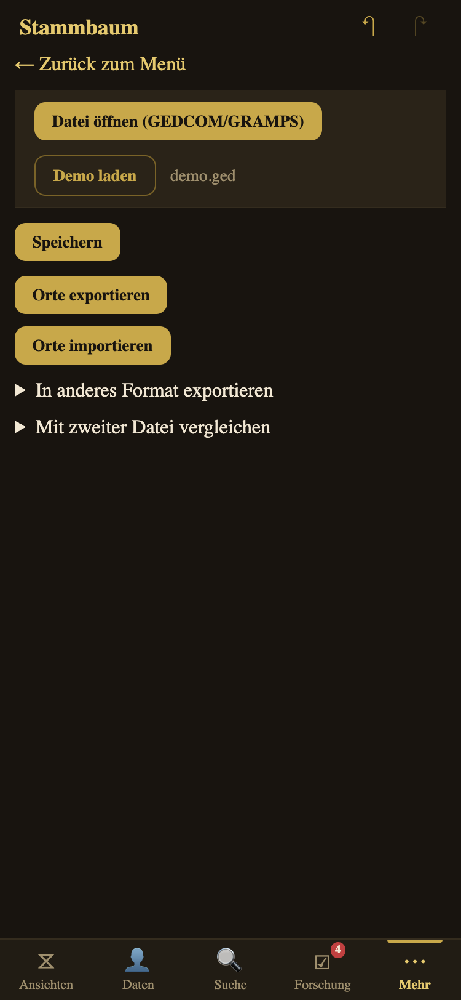
Der übliche Weg — von der Datei zur belegten Forschung
Wenn Sie mit einer bestehenden Datei arbeiten, hat sich diese Reihenfolge bewährt. Die einzelnen Schritte sind in den folgenden Kapiteln ausführlich erklärt.
- Öffnen & sichten. Datei laden und mit dem Qualitäts-Dashboard einen ersten Eindruck der Datenlage gewinnen.
- Orte ordnen. Den Orts-Bestand importieren, Dubletten zusammenführen, Text-Orte mit Ortsobjekten verknüpfen — danach greifen Karte, Statistik und Ortszeitgenossen.
- Ergänzen & belegen. Fehlende Ereignisse eintragen und jede Angabe mit einer Quelle versehen.
- Forschen mit Plan. Offene Fragen als Aufgabe festhalten, Recherche im Protokoll dokumentieren, Schlussfolgerungen als Hypothese prüfen.
- Prüfen & sichern. Befunde abarbeiten und die Datei bewusst zurückschreiben.
3. Die Oberfläche verstehen
Stammbaum ordnet alles nach Rollen: Es gibt Daten (die fünf Datenarten), Ansichten (Diagramme und Statistik), Forschung (Dashboard, Aufgaben, Protokoll, Hypothesen) und Arbeit (Suche, Datei). Auf dem Handy und auf dem Computer sieht das leicht unterschiedlich aus, folgt aber überall demselben Register — und benennt dieselbe Gruppe auf beiden Geräten gleich.
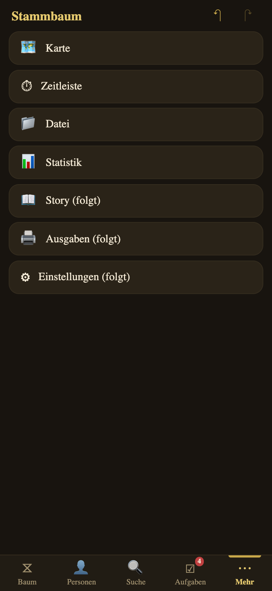
Auf dem Handy: Bottom-Navigation
Unten liegen fünf Tasten: Ansichten, Daten, Suche, Forschung und Mehr. Die Reihe direkt darunter wechselt je nach Bereich — unter Daten sind das die Segmente Personen · Familien · Quellen · Orte · Höfe.
Unter Mehr finden Sie Karte, Zeitleiste, Statistik, das Datei-Menü — und (noch in Arbeit) Story, Ausgaben und Einstellungen.
Auf dem Computer: Seitenleiste und zwei Spalten
Ab einer Fensterbreite von etwa 900 Pixeln ersetzt eine Seitenleiste die untere Navigationsleiste. Sie zeigt alle Ziele nach Rolle gruppiert (DATEN · ANSICHTEN · FORSCHUNG · ARBEIT — die Gruppe Forschung bündelt Dashboard, Aufgaben, Protokoll und Hypothesen). Zusätzlich erscheint die Zwei-Spalten-Ansicht: links die Liste, rechts sofort die Detailansicht des gewählten Eintrags.
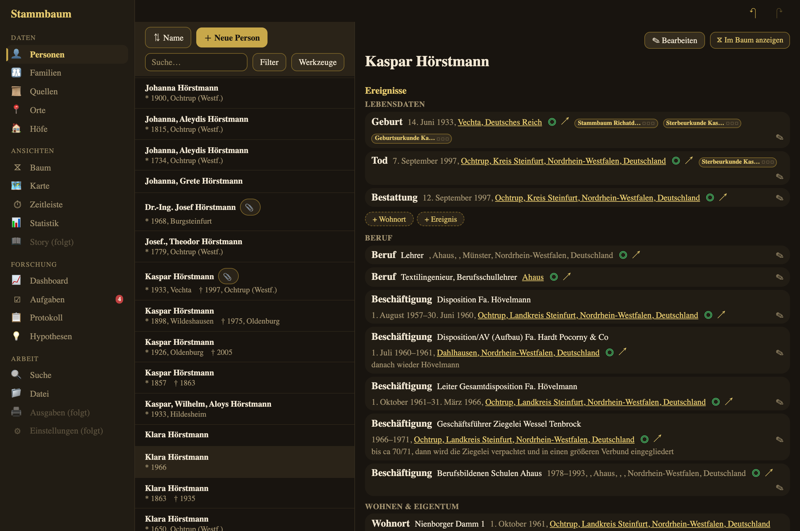
Befehlspalette (⌘K)
Auf dem Computer öffnet ⌘K (bzw. Strg+K) eine
Befehlspalette: Tippen Sie ein Ziel wie „Karte" oder einen Namen, und springen
Sie mit der Eingabetaste direkt dorthin.
Rückgängig und Wiederherstellen
Oben in der Kopfzeile liegen die Pfeile ↶ Rückgängig und ↷ Wiederherstellen. Jede Änderung lässt sich schrittweise zurücknehmen; Zum geladenen Stand verwirft alle Änderungen seit dem letzten Laden.
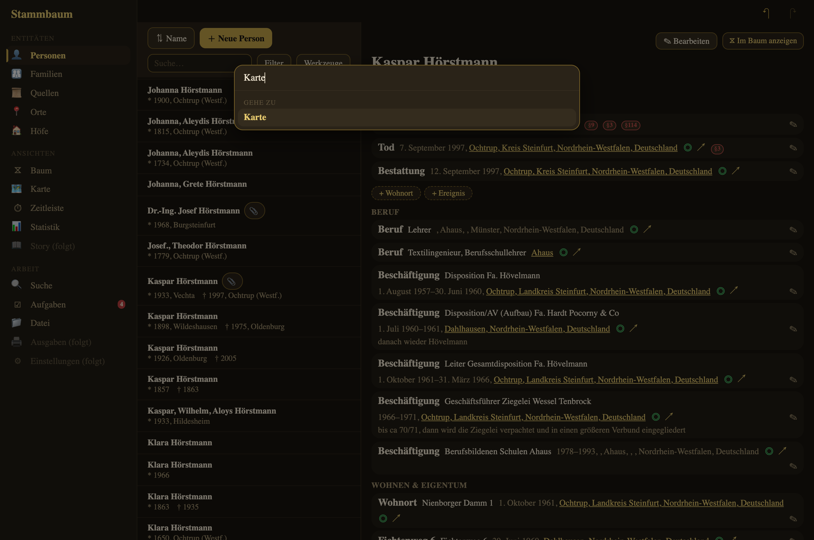
4. Personen — das Herzstück
Die Personenliste
Alle Personen alphabetisch, gruppiert nach Anfangsbuchstabe. Jede Zeile zeigt Namen sowie Geburts- und Sterbedaten (mit Ort, sofern vorhanden). Personen ohne verwertbaren Namen (leer oder nur „?") stehen ganz oben zu einer aufklappbaren Zeile „N ohne Namen" zusammengefasst — so öffnet die Liste nicht mit lauter Unbekannten; ein Tippen zeigt sie einzeln (bei aktiver Suche sind sie automatisch aufgeklappt).
- ↕ Name schaltet die Sortierung um.
- Das Suchfeld filtert sofort nach Namen.
- + Neue Person legt einen neuen Datensatz an.
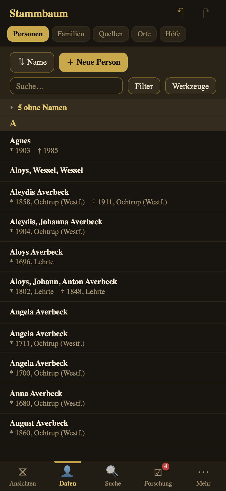
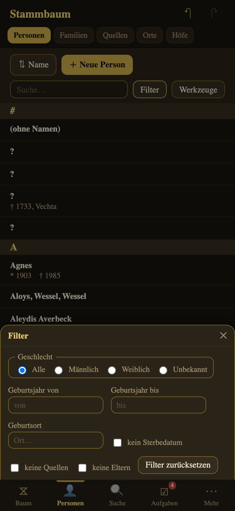
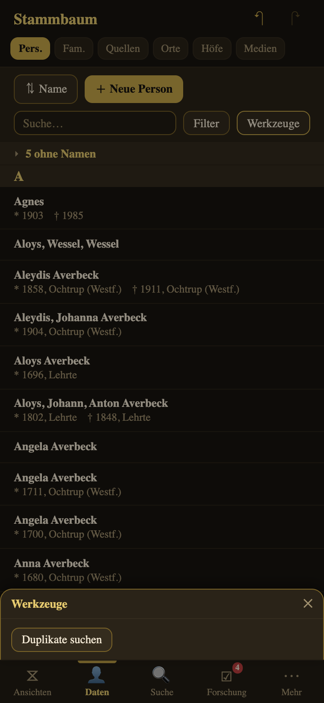
Filtern und Werkzeuge
Filter öffnet ein Panel: nach Geschlecht, Geburtsjahr von–bis, Geburtsort sowie nach fehlenden Angaben (kein Sterbedatum, keine Quellen, keine Eltern). „Filter zurücksetzen" räumt alles wieder auf.
Werkzeuge öffnet die Zusatzfunktionen — darunter Duplikate suchen (siehe unten).
Die Detailansicht einer Person
Ereignisse sind nach Typ gruppiert — Lebensdaten, Beruf, Wohnen & Eigentum und so weiter. Zu jedem Ereignis sehen Sie:
- Datum und Ort (der Ort ist anklickbar und führt zur Karte oder zum Ort-Steckbrief),
- einen ◎-Kreis, wenn Koordinaten vorliegen, und einen Pfeil ↗ zum Sprung auf die Karte,
- Quellen-Marken zeigen den Kurznamen der Quelle — ein Tippen öffnet die Quelle; ein kleiner Punkte-Balken daneben ist die Beweiskraft (0–3 gefüllte Punkte). Nur eine namenlose Quelle erscheint ersatzweise als Nummer §N.
Oben führen ✎ Bearbeiten und ⧖ Im Baum anzeigen weiter; + Wohnort und + Ereignis ergänzen neue Einträge.
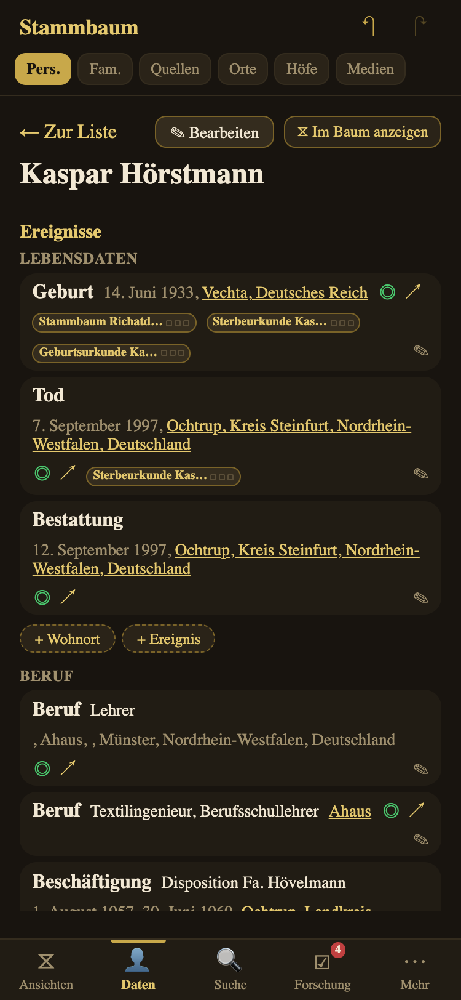
Beweisführungsnotiz
Trägt eine Person mindestens eine Hypothese, erscheint im Detail eine automatisch berechnete, rein lesende Beweisführungsnotiz: ein Reifegrad („% aufgelöst"), die Quellenlage (Anteil mit Evidenz-Bewertung und Beweiskraft) sowie die Zahl bestätigter, offener und verworfener Hypothesen. Sie fasst auf einen Blick zusammen, wie gut die Person belegt ist — ohne dass Sie etwas eingeben müssen.
So legen Sie eine Person an
- In der Personenliste auf + Neue Person tippen.
- Namen und Geschlecht eintragen. Der Name wird beim Speichern automatisch in Vor- und Nachname zerlegt — Sie müssen nichts doppelt eingeben.
- Über + Ereignis und + Wohnort die Lebensdaten ergänzen (siehe unten).
- Die Person mit den Eltern bzw. einer Familie verbinden (siehe Kapitel 5).
So erfassen Sie ein Ereignis
Jedes Ereignis (Geburt, Heirat, Beruf, Wohnort …) trägt Datum, Ort und Quellen. Zwei Felder verdienen besondere Aufmerksamkeit:
Das Datum
Datumsangaben dürfen unscharf sein — genau wie in der echten Forschung. Erlaubt sind
volle Daten, nur Jahre, sowie Näherungen mit um, vor,
nach und Zeiträume (zwischen … und …). Erfundene
Genauigkeit hilft niemandem — tragen Sie ein, was die Quelle hergibt.
Der Ort
Ein Ort ist zunächst nur Text. Sein voller Wert entsteht erst, wenn er mit einem Ortsobjekt verknüpft ist: Erst dann erscheint er auf der Karte, zählt in der Statistik richtig und verbindet Zeitgenossen.
Doppelte Personen finden und zusammenführen
Über Werkzeuge → Duplikate suchen vergleicht die App alle Personen paarweise und listet mögliche Dubletten — nach einem Ähnlichkeits-Score (0–100) sortiert, den ein Schwellenwert-Regler nach oben oder unten öffnet. Jede Zeile nennt die beiden Kandidaten, ihre Lebensdaten und die Gründe für den Verdacht (etwa „Nachname identisch · Geburtsjahr ±1 · Vater identisch").
Ein Antippen öffnet den Zusammenführen-Dialog: Dort entscheiden Sie feldweise, welche Angaben der überlebende Datensatz behält. Ein Paar, das erkennbar kein Duplikat ist, lässt sich als „kein Duplikat" merken — dann taucht es nicht wieder auf.
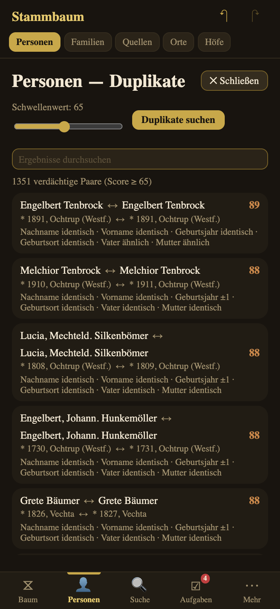
5. Familien
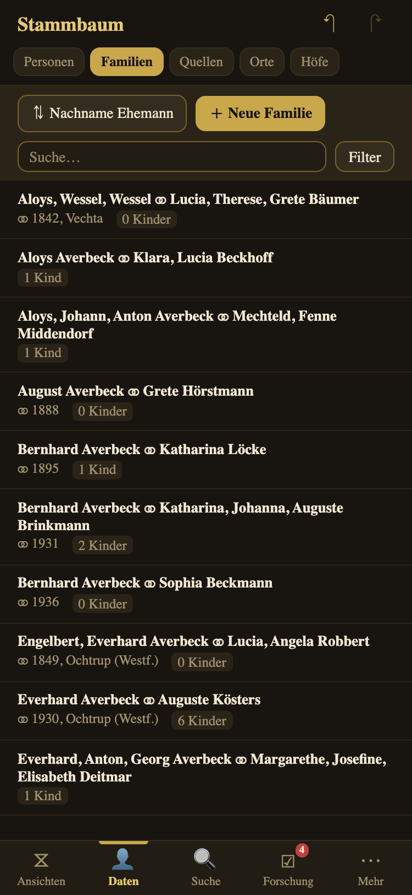
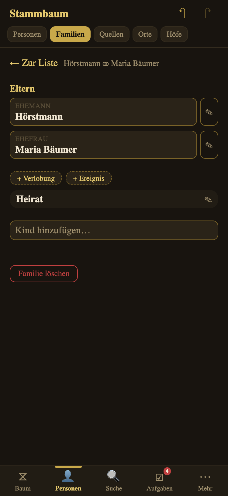
Der Bereich Familien listet alle Ehen/Verbindungen; ein Sortier-Umschalter mit drei Zuständen und ein Filter helfen beim Finden.
Die Familien-Detailansicht
- Eltern — Ehemann und Ehefrau, jeweils anklickbar.
- Familien-Ereignisse wie Verlobung und Heirat (mit Ort, Koordinaten und Quellen wie bei Personen).
- Kinder — die Liste ist anklickbar; über „Kind hinzufügen…" wird eine Person zugeordnet, das ✕ löst sie wieder.
Ereignisse, die zu Personen und Familien gehören (etwa eine Heirat), teilen sich dieselbe Ereigniszeile — Sie pflegen sie nur an einer Stelle.
6. Quellen und Archive
Quellen belegen Ihre Angaben. Der Bereich Quellen hat zwei Segmente: Quellen und Archive (Repositorien). Die Quellenliste zeigt jede Quelle mit der Zahl ihrer Referenzen.
Die Quellen-Detailansicht
- Titel, Verlag/Fundstelle (z. B. eine Matricula-Adresse),
- Referenzen — welche Personen und Ereignisse diese Quelle zitieren,
- je Zitat die Beweiskraft als QUAY 3-Marke mit einem kleinen Punkte-Balken (0–3 gefüllte Punkte).
Evidenzbewertung
Zu jedem Quellenbezug lässt sich eine Bewertung nach drei Achsen erfassen (Herkunft, Information, Beweiskraft). Die Beweiskraft fließt in die QUAY-Anzeige ein.
Archive
Archive/Repositorien werden mit Detailansicht und Signatur geführt und lassen sich beim Anlegen einer Quelle über einen Picker zuordnen.
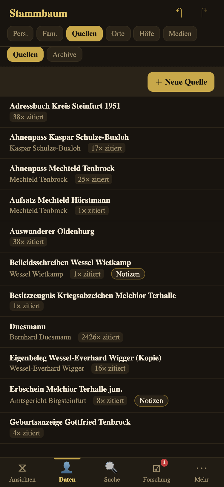
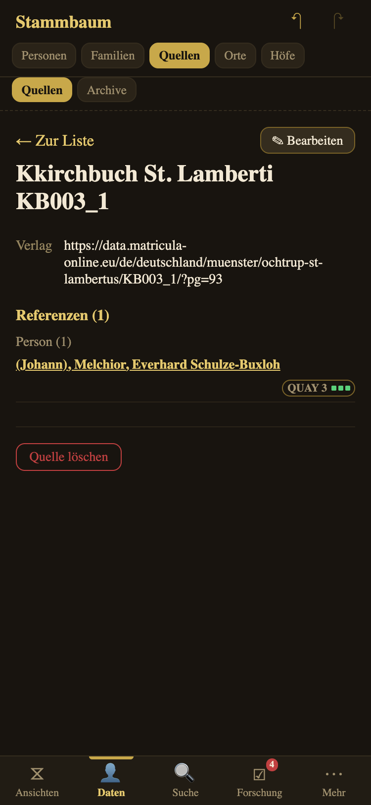
So belegen Sie eine Angabe
- Die Quelle einmalig anlegen (Titel, Fundstelle, ggf. Archiv).
- Beim Ereignis die Quelle zuordnen — dieselbe Quelle kann viele Ereignisse belegen.
- Die Beweiskraft und die Evidenz-Achsen bewerten. Die Bewertung erscheint als Punkte-Balken (0–3 gefüllte Punkte) an der Quellen-Marke der Ereigniszeile.
7. Orte
Orte sind in Stammbaum eigene Objekte — nicht nur Text in einem Ereignis. Das erlaubt Verwaltungshierarchien, Namensvarianten über die Zeit, Koordinaten und saubere Zusammenführung von Schreibvarianten. Das Orts- und Hofkonzept ist eines der Herzstücke der App — es lohnt sich, es einmal zu verstehen.
orte.json dabei leistet) und dann die
Bedienung (Liste, Steckbrief, Verknüpfen, Zusammenführen, Import/Export).
Das Konzept: zwei Objektarten, eine Wahrheit
In einer GEDCOM-Datei steht bei jedem Ereignis nur ein Ortstext wie „Ochtrup, Kreis Steinfurt, Nordrhein-Westfalen, Deutschland". Für die reine Ablage genügt das — aber Text kann nicht auf einer Karte liegen, weiß nichts von seiner eigenen Geschichte und lässt sich nicht zuverlässig mit einer anderen Schreibweise desselben Ortes zusammenführen. Stammbaum löst diesen Text deshalb gegen zwei eigenständige Objektarten auf:
- Der Ort (PlaceObject) — eine Verwaltungseinheit: ein Dorf, eine Stadt, ein Kirchspiel, ein Kreis, ein Land. Er trägt datierte Namensvarianten (Ochtdorp → Ochtrop → Ochtrup), eine datierte Zugehörigkeitskette (welchem Amt, Kreis, Staat er wann unterstand), Koordinaten, eine Notiz und eine Existenzspanne.
- Der Hof (HofObject) — eine Adresse innerhalb eines Dorfes (Straße, Hausnummer, Hofname). Ein Hof hängt immer an genau einem Dorf, hat eigene Adressvarianten (Umbenennung, Hausnummernreform), eigene Koordinaten (damit Binnenwanderung im Dorf sichtbar wird) und einen eigenen Lebenszyklus.
Beide sind bewusst getrennt: Ein Hof ist keine Verwaltungsebene, und ein Land ist keine Adresse. Diese Trennung ist der Kern des ganzen Systems — sie erlaubt es, dieselbe reale Identität über Jahrhunderte, Schreibweisen und Grenzverschiebungen hinweg als ein Objekt zu führen.
Die Rolle der orte.json
Hier liegt der entscheidende Unterschied zu anderen Programmen. Ihr Wissen über Orte und Höfe — Koordinaten, historische Namen, Verwaltungshierarchien — gehört nicht zu einem Stammbaum, sondern zu der Landschaft, in der Ihre Familien gelebt haben. Dass Ochtrup bei 52,20° N / 7,19° O liegt, 1803 vom Fürstbistum Münster an Salm-Horstmar fiel und heute im Kreis Steinfurt liegt, ist in jeder Ihrer Dateien dasselbe.
Deshalb bewahrt Stammbaum diesen Bestand in einer eigenen Datei
orte.json auf — getrennt von der Genealogie-Datei:
- Stammbaum-übergreifend. Ein einmal gepflegter Ort steht allen Ihren Dateien zur Verfügung. Sie recherchieren Ochtrups Geschichte einmal, nicht in jeder Datei neu.
- Nicht in der GEDCOM-/GRAMPS-Datei. Die Zeitachse (historische
Namen, datierte Zugehörigkeiten) kann GEDCOM gar nicht abbilden. Beim Export
wird sie auf den im Ereignisjahr gültigen Ortstext zusammengefaltet —
die volle Historie bleibt in
orte.json, Ihre Datei bleibt standardkonform und verliert nichts (siehe Kapitel 16). - Ein Spiegel im Gerät. Damit die Karte sofort funktioniert, hält
die App eine Kopie von
orte.jsonim Browser-Speicher. Import und Export gehen über Datei → Orte importieren / Orte exportieren. - Geräteübergreifend zusammengeführt. Pflegen Sie Orte auf mehreren Geräten, führt die App die Bestände beim Abgleich verlustfrei zusammen (Vereinigung, kein Überschreiben).
Was in die Genealogie-Datei gehört (die belegte Tatsache: „geboren in Ochtrup") und was in den Ortsbestand gehört (das Weltwissen: „Ochtrup liegt hier und hieß früher so"), ist damit sauber getrennt — und beides an seinem richtigen Platz.
Automatisch angelegt, von Hand veredelt
Sie müssen nicht bei null anfangen: Beim Öffnen einer Datei legt Stammbaum aus den vorhandenen Ortstexten automatisch Ortsobjekte an (ein Dorf je distinkter Schreibhierarchie) und löst die Ereignisse dagegen auf — das Orte-Register ist also nie leer. Diese Erst-Anlage ist bewusst grob: Schreibvarianten desselben Ortes ergeben zunächst getrennte Einträge. Das Veredeln — Dubletten zusammenführen, Koordinaten und Historie ergänzen — geschieht danach mit den Kurationswerkzeugen (siehe unten). Höfe entstehen dagegen nicht automatisch bei jedem Ereignis, sondern nur dort, wo eine echte Adresse vorliegt.
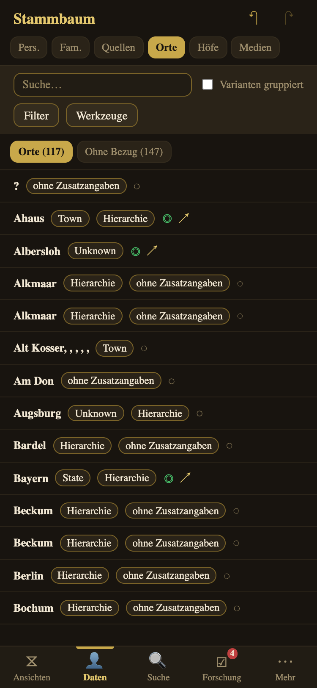
Die Ortsliste
- Varianten gruppiert fasst gleichnamige Schreibweisen zusammen.
- Die Umschalter Orte (N) / Ohne Bezug (N) trennen genutzte von nicht referenzierten Orten.
- Badges wie Hierarchie und ohne Zusatzangaben sowie ein kleiner Ring zeigen den Anreicherungsgrad an.
Der Ort-Steckbrief
Die Abbildung zeigt den angereicherten Ort Ochtrup (Westf.) — ein gutes Beispiel dafür, was ein Ortsobjekt alles trägt:
- Verwaltungszugehörigkeit — aktuell als anklickbare Kette (Ochtrup › Kreis Steinfurt › Nordrhein-Westfalen › Deutschland).
- Zugehörigkeit nach Jahr — die volle Kette je Epoche:
1269 Amt Horstmar, 1803 Grafschaft Salm-Horstmar, 1811 französisches
Kaiserreich, 1815 Königreich Preußen … Genau diese Zeitachse kann eine
GEDCOM-Datei nicht speichern; sie lebt in
orte.json. - Ereignisse nach Typ: welche Personen hier geboren wurden, heirateten, starben — mit Quellen-Badges.
- Ortszeitgenossen: wer zur selben Zeit am selben Ort lebte.
- Ein Namens-Zeitstrahl hält historische Schreibvarianten fest.
Über ✎ Bearbeiten sind alle Felder pflegbar. „Ort löschen" setzt die betroffenen Ereignisse behutsam auf ihren reinen Textstand zurück — die Ereignisse selbst gehen nie verloren.
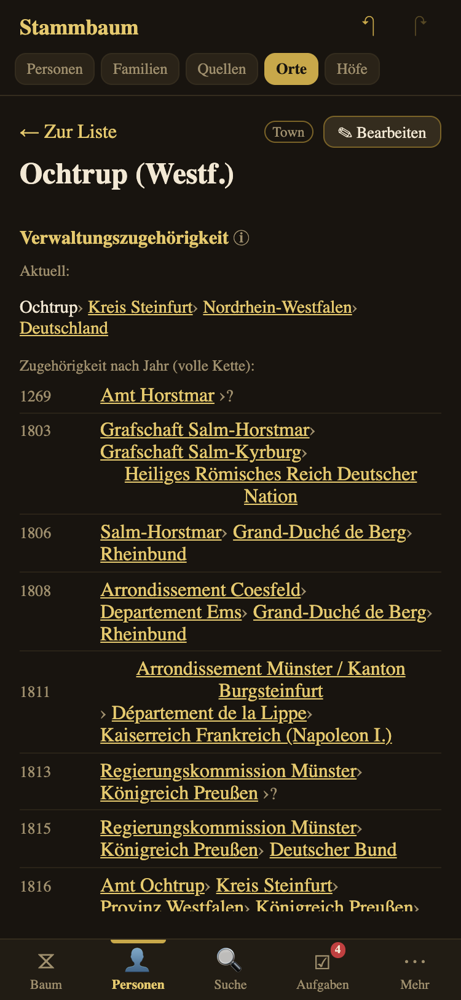
Verknüpfen, prüfen, zusammenführen
- Text → Ort verknüpfen: Ein reiner Orts-String im Ereignis wird einem Ortsobjekt zugeordnet — die Anzeige aktualisiert sich sofort.
- Orts-Review arbeitet unklare Zuordnungen ab.
- Massen-Zusammenführung bündelt Konfliktgruppen (mehrere Schreibweisen desselben Ortes) und kennzeichnet die Herkunft.
Orts-Datei importieren und exportieren
Über Datei → Orte importieren / Orte exportieren pflegen Sie einen wiederverwendbaren Orts-Bestand (Koordinaten, Hierarchien, Namensvarianten) als JSON-Datei. Beim Import werden vorhandene Orte angereichert und die Ereignisse neu aufgelöst — dadurch erscheinen die Marker auf der Karte (siehe Kapitel 10).
So halten Sie Ihre Orte sauber
- Anreichern: einen vorhandenen Orts-Bestand (Koordinaten, Hierarchien) importieren.
- Zusammenführen: im Werkzeuge-Bereich die Massen-Dedup laufen lassen und Schreibvarianten desselben Ortes bündeln.
- Verknüpfen: übrige Text-Orte einem Ortsobjekt zuordnen — die Anzeige aktualisiert sich sofort.
- Prüfen: die Orts-Review-Liste abarbeiten und den Filter „Ohne Bezug" nutzen, um verwaiste Orte aufzuräumen.
8. Höfe
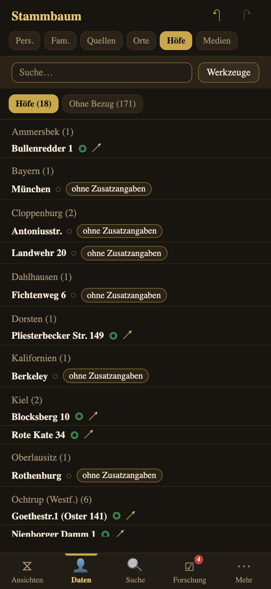
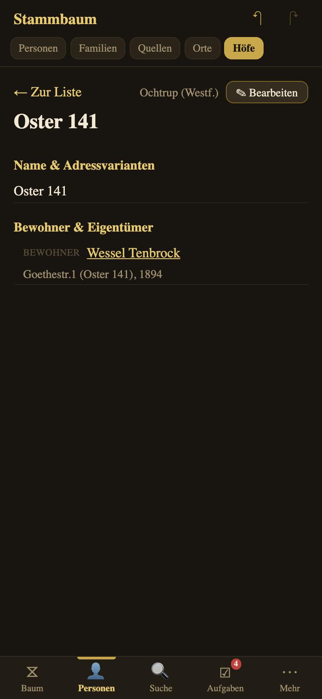
Ein Hof ist eine feinere Ortsebene — eine Adresse innerhalb eines Dorfes. Die Höfe-Liste gruppiert nach Dorf und zeigt darunter Straße und Hausnummer.
- Alle Hof-Felder sind editierbar; eine Umbenennung wirkt durchgängig — auf allen referenzierenden Ereigniszeilen.
- Hof-Review und Massen-Zusammenführung bereinigen den Bestand analog zu den Orten.
- „Hof löschen" entfernt die Hof-Ebene, ohne die Ereignisse zu verlieren.
9. Medien
Fotos, Urkundenscans, Kirchenbuch-Aufnahmen: Medien sind in Stammbaum eine eigene, gleichrangige Datenart — nicht bloß ein Anhang an einer Person. Jede Datei wird einmal beschrieben und kann an beliebig vielen Stellen erscheinen — Personen, Familien, Quellen — ohne sich zu vervielfachen.
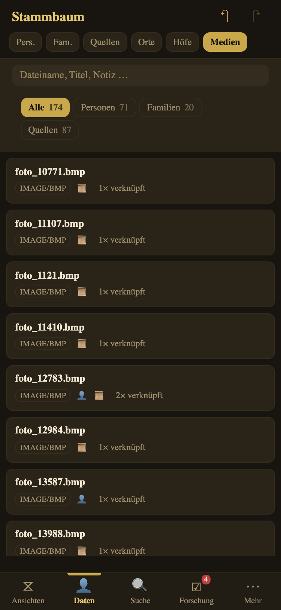
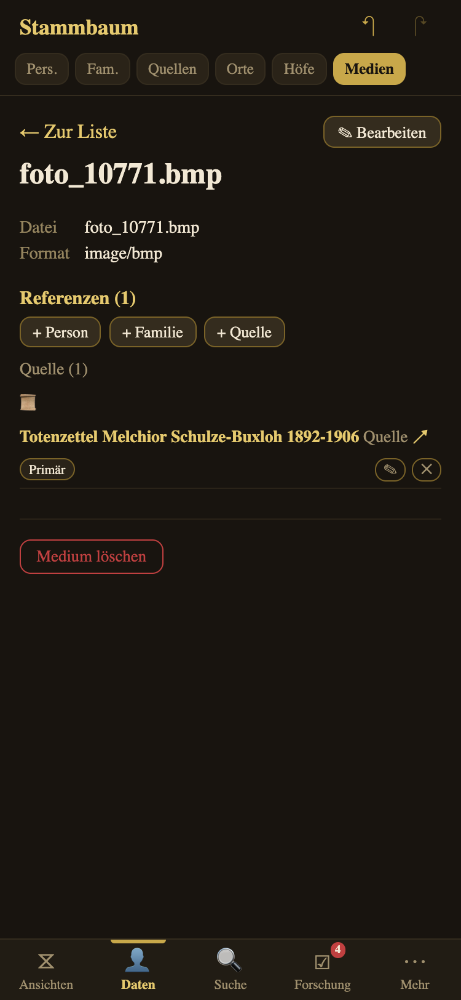
Die Galerie
Das Segment Medien zeigt alle Dateien Ihres Stammbaums als Kacheln — eine globale Arbeitsfläche, nicht in einer einzelnen Person versteckt.
- Die Filterreihe Alle · Personen · Familien · Quellen (jeweils mit Zähler) blendet ein, welche Medien an welcher Datenart hängen.
- Die Suche greift über Dateiname, Titel und Notiz.
- Ein ⚠-Zeichen markiert eine Kachel, deren Datei-Referenz fehlt — so finden Sie fehlende Pfade, bevor sie im Export auffallen.
Ein Medium, zwei Ebenen
Öffnen Sie ein Medium, trennt der Steckbrief bewusst zwei Feldgruppen — dasselbe Muster wie bei Ort und Hof:
- Global (Dateipfad, Format, Medientyp, Titel): gilt für alle Verknüpfungen der Datei. Ein Klick auf „Speichern (alle Ref.)" ändert die Beschreibung überall zugleich — eine Datei, eine Wahrheit.
- Referenz-spezifisch (Titel-Override, Aufnahmedatum, Notiz, Primärbild): gilt nur für diese eine Verknüpfung. So kann dasselbe Gruppenfoto bei jeder abgebildeten Person eine eigene Bildunterschrift tragen; ein leerer Override fällt automatisch auf den globalen Titel zurück.
Verknüpfen
Die Referenzliste zeigt jede Stelle, an der die Datei auftaucht, und springt per Tipp direkt dorthin. Über „+ Person / + Familie / + Quelle" verknüpfen Sie ein Medium mit einem weiteren Datensatz — über denselben Auswahl-Dialog wie überall sonst in der App, keine Sonderbedienung. Verknüpfungen, die aus einem Ereignis oder einer Quellen-Fundstelle stammen, werden zum Nachschlagen angezeigt und dort bearbeitet, wo sie entstanden sind.
So hängen Sie ein Foto an
- Beim Ereignis auf den 📷-Knopf tippen und die Datei wählen — sie ist sofort mit dem Ereignis verknüpft.
- Im Segment Medien die Kachel öffnen und den globalen Titel ergänzen, damit die Datei überall benannt ist.
- Bei Bedarf pro Verknüpfung einen eigenen Titel, ein Aufnahmedatum oder das Primärbild-Kennzeichen setzen.
10. Diagramme: Baum, Karte, Zeitleiste
Der Bereich Ansichten ist der Umschalter für die grafischen Darstellungen: Baum, Karte und Zeitleiste (Story folgt). Jede Ansicht merkt sich ihre eigene Auswahl.
Der Baum: drei Ansichten
Die Baum-Ansicht kennt drei Darstellungen, umschaltbar über die Leiste Sanduhr · Nachkommen · Fächer direkt über dem Diagramm. Die gewählte Ansicht bleibt erhalten, auch wenn Sie zwischendurch zu Karte oder Zeitleiste wechseln. Jedes Diagramm lässt sich per ⤢ Vollbild auf den ganzen Bildschirm ziehen und passt sich automatisch mittig ein; ein Tippen auf eine Kachel (bzw. ein Fächer-Segment) wechselt den Probanden, die Pfeiltasten ↑ ↓ → navigieren zwischen den Personen.
Sanduhr
Die Sanduhr zeigt den Probanden in der Mitte, die Vorfahren darüber, seine Kinder und Geschwister darunter. Die kleinen Ziffern sind die Kekulé-Nummern (1 = Proband, 2 = Vater, 3 = Mutter …); der farbige Rand codiert das Geschlecht. Mehrfach-Ehen (⚭N) und Halbgeschwister (½) werden eigens markiert.
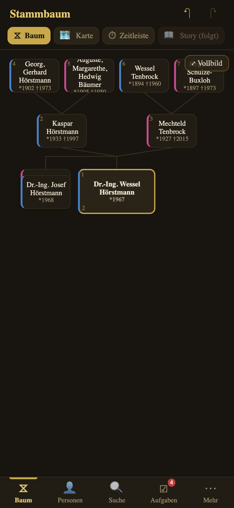
Nachkommen-Baum
Der Nachkommen-Baum stellt eine Person an die Spitze und fächert ihre Kinder, Enkel und weitere Generationen (einstellbar 2 bis 7) nach unten auf — mit den Ehepartnern rechts, den Geschwistern links und T-förmigen Verbindungslinien. Das kleine ▼ an einer Kachel zeigt, dass es unterhalb noch weitergeht; ein Tippen darauf rückt diese Person in die Spitze.
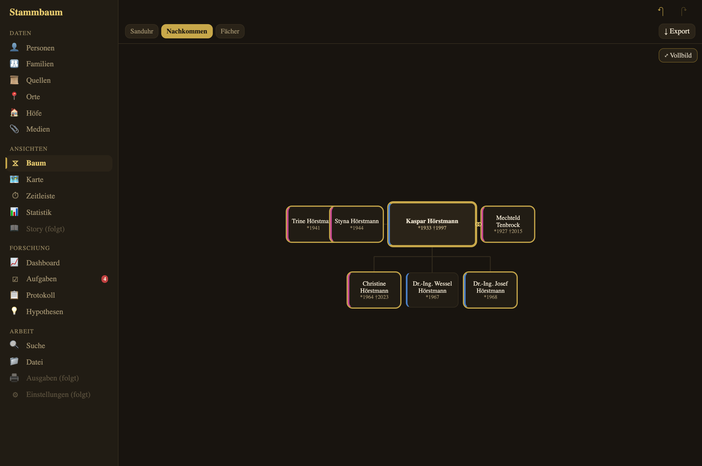
Fächer
Der Fächer zeigt die Vorfahren als konzentrische Halbkreis-Ringe (3 bis 6 Generationen): der Proband unten in der Mitte, die Vaterseite links, die Mutterseite rechts, jede Generation ein Ring weiter außen. Eine kompakte Übersicht über die gesamte Ahnenschaft auf einen Blick — blau für Männer, rosa für Frauen.
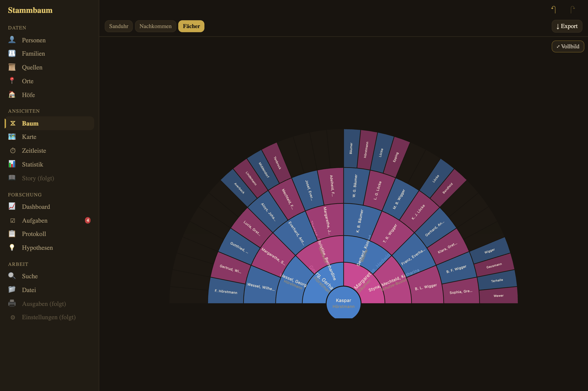
Vollständigkeits-Ringe
Karten mit fehlenden oder unbelegten Angaben tragen einen farbigen Ring: goldgelb für einen Hinweis, orange für eine Warnung, rot für einen Fehler. Die Stufung stammt aus derselben Prüfung wie das Qualitäts-Dashboard (Kapitel 13) — kein zweiter Maßstab. Fahren Sie mit der Maus über eine Karte, nennt ein Hinweisfeld die konkret fehlenden Angaben. So sehen Sie direkt im Baum, wo noch Arbeit wartet.
Als Bild oder Poster exportieren
Über ↓ Export (rechts in der Umschalt-Leiste) speichern Sie das gerade gezeigte Diagramm als PNG-Bild oder als A1-Poster (SVG) — Letzteres verlustfrei und in Druckgröße, etwa für die Wand. Der Export enthält alles, was Sie sehen: Namen, Jahre, Geschlechtsfarben und die Vollständigkeits-Ringe.
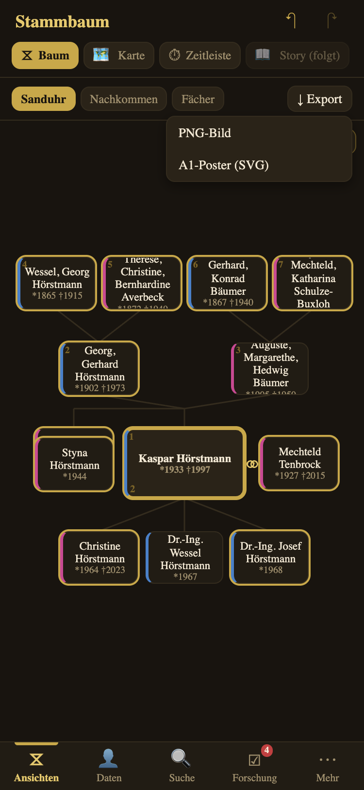
Die interaktive Karte
Die Karte hat drei Modi: Orte (alle Orte und Höfe mit Koordinaten — braune Kreise für Dörfer, blaue Rauten für Höfe), Personen (eine animierbare Lebens-/Wanderungslinie einer gewählten Person, mit Abspiel-Steuerung) und Migrationen.
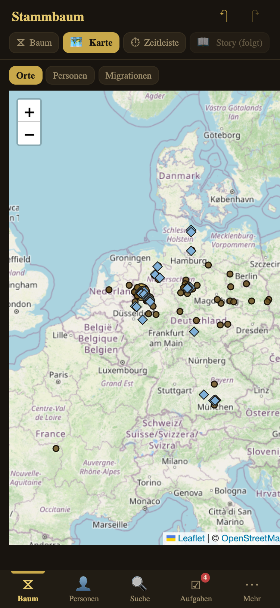
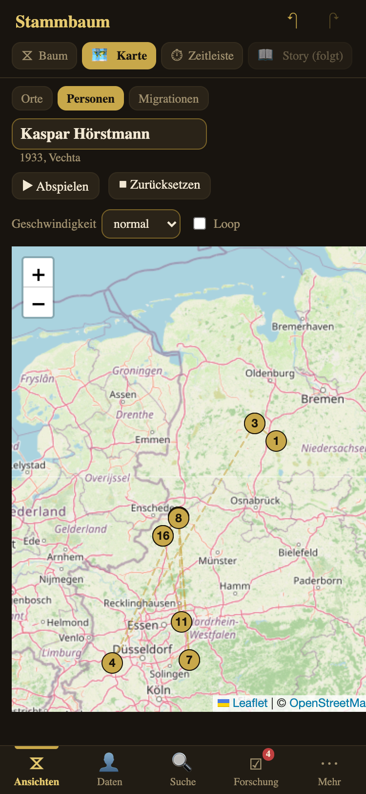
Im Modus Personen wählen Sie oben eine Person und lassen ihren Lebensweg mit ▶ Abspielen animieren — Station für Station, mit einstellbarer Geschwindigkeit und optionalem Loop. ■ Zurücksetzen stellt den Anfang wieder her.
Die Zeitleiste
Die Zeitleiste stellt das Leben einer Person (oder mehrerer im Vergleich) in Bahnen dar: Leben, Wohnorte, Beruf, Familie, Sonstiges und ein Kontextband Geschichte. Über ⊕ Person hinzufügen wählen Sie, wen die Leiste zeigt; die geöffnete Person ist automatisch vorbelegt.
- Umschalter Swim-Lane / Dekaden.
- Das Kontextband Historische Ereignisse (Krieg, Seuche, Politik, Religion, Natur) lässt sich zuschalten und je Kategorie filtern — im Beispiel etwa „1933 NS-Machtübernahme" oder „1939 Zweiter Weltkrieg beginnt". So sehen Sie ein Leben vor seinem Zeithintergrund.
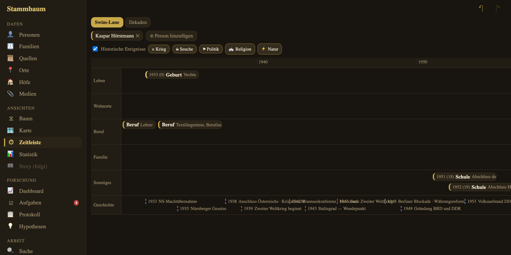
11. Statistik
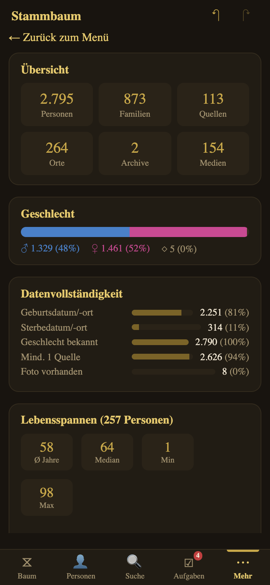
Mehr → Statistik wertet den ganzen Bestand aus:
- Übersicht — Anzahl Personen, Familien, Quellen, Orte, Archive, Medien.
- Geschlecht als Balken mit Prozenten.
- Datenvollständigkeit — Anteil mit Geburtsdatum/-ort, Sterbedatum, Quelle usw.
- Lebensspannen — Durchschnitt, Median, Minimum, Maximum.
Derselbe Rechenkern liegt der Live-Ansicht und (künftig) dem gedruckten Report zugrunde; er rechnet über die aufgelösten Orte, nicht über rohe Textfelder.
12. Forschung: Aufgaben, Protokoll, Hypothesen
Die Forschung ist Ihr Arbeitsplatz für die laufende Recherche und besteht aus vier Bereichen: Dashboard (Kapitel 13), Aufgaben, Protokoll und Hypothesen. Jeder Eintrag hängt an einer Person oder Familie.
Auf dem Computer bildet die Forschung eine eigene, beschriftete Seitenleisten-Gruppe „Forschung"; auf dem Handy erreichen Sie sie über Forschung in der unteren Leiste, mit dem Dashboard an erster Stelle der Segmentreihe.
Aufgaben und Kanban-Board
Aufgaben sind offene To-dos Ihrer Recherche. Sie lassen sich als Liste oder als Board anzeigen — das Board ordnet sie nach Bearbeitungsstatus (Offen, In Arbeit …). Mit „→ In Arbeit" verschieben Sie eine Karte. Jede Karte nennt die zugehörige Person.
+ Aufgabe legt eine neue an (Text, Kategorie, Ziel-Person, optional eine Quelle). Ein Filter grenzt die Ansicht ein.
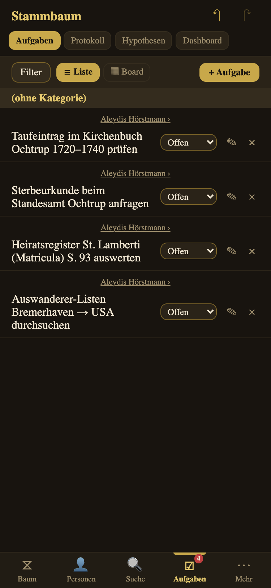
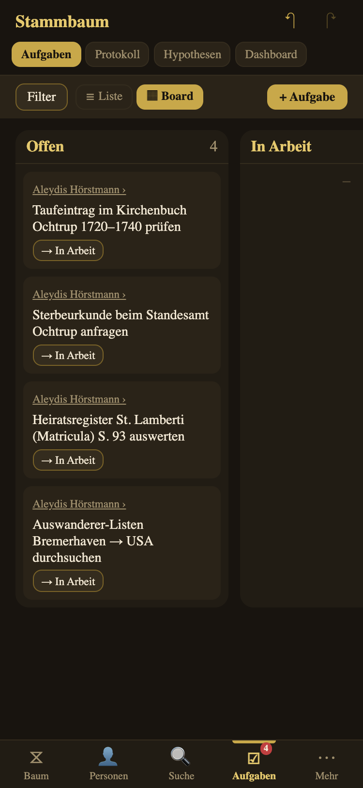
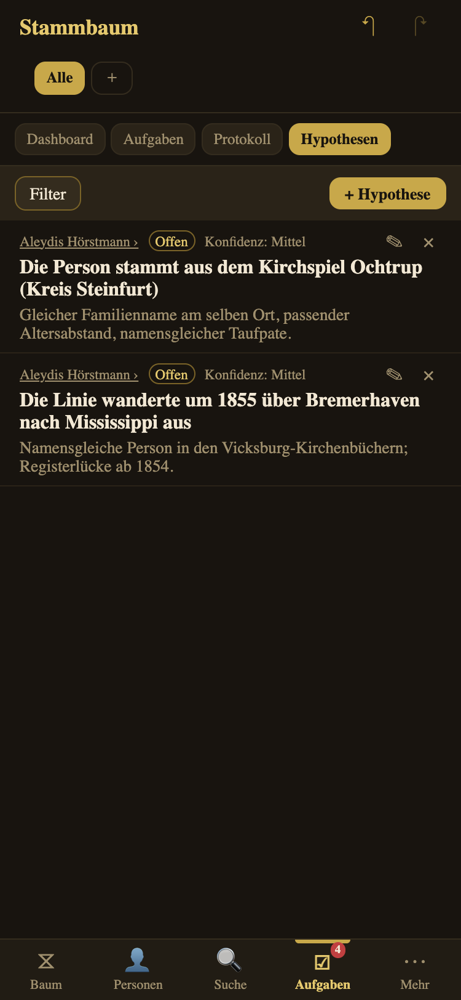
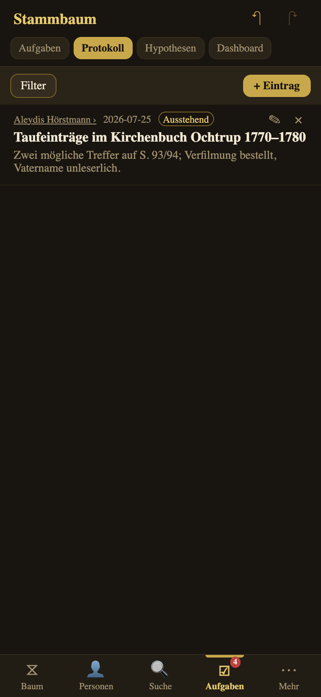
Hypothesen
Eine Hypothese hält eine Annahme fest — mit Status (Offen / Bestätigt / Verworfen), einer eigenen Konfidenz (bewusst getrennt von der Quellen-Beweiskraft) und einer Beweisführung. Belege werden als Quellen-Referenzen angehängt.
Forschungsprotokoll
Das Protokoll dokumentiert jeden Rechercheschritt: Datum, Archiv, Quelle, Suchanfrage, Ergebnis und Notiz. Das Ergebnis kennt vier Werte — gefunden, teilweise (Fund, aber unvollständig — trägt die Wiedervorlage), nichts gefunden und ausstehend. So bleibt nachvollziehbar, wo Sie schon gesucht haben.
Ein Umschalter wechselt zwischen der personenweisen Gruppierung und einer chronologischen Timeline (neueste zuerst) — dieselben Einträge, eine andere Sicht. Und aus einer Aufgabe heraus legt die Schaltfläche 🔍 Protokoll einen vorbefüllten, mit der Aufgabe verknüpften Protokolleintrag an; die Protokollzeile zeigt die auslösende Aufgabe als Rückverweis.
Forschen mit Plan — der Kreislauf
Aufgaben, Protokoll und Hypothesen sind kein Selbstzweck, sondern bilden zusammen einen nachvollziehbaren Forschungsprozess:
- Frage als Aufgabe festhalten („Taufeintrag von X finden").
- Suchen — jeden Schritt (auch erfolglose!) im Protokoll vermerken: Archiv, Quelle, Suchanfrage, Ergebnis.
- Schlussfolgern — eine Hypothese formulieren, mit Belegen und einer ehrlichen Konfidenz.
- Bestätigen oder verwerfen — die Hypothese auf Grundlage der Belege abschließen und die gesicherte Tatsache in die Daten übernehmen.
13. Qualität und Datenprüfung
Das Dashboard (Aufgaben → Dashboard) fasst die Datengüte zusammen und stützt sich auf eine Regel-Engine, die den ganzen Bestand prüft.
- Ein Gesamtwert „% befundfrei" und Zähler für Fehler, Warnungen, Hinweise und saubere Personen.
- Der Lückenradar zeigt Abdeckungsgrade (Geburtsdatum, Geburtsort, Quelle mit Bewertung …).
- Brennpunkte listen konkrete Auffälligkeiten je Person — etwa „zu jung bei Geburt" oder ein unplausibles Heiratsalter.
Über Filter, ✓ Bericht und das Zahnrad steuern Sie Umfang und Regel-Konfiguration.
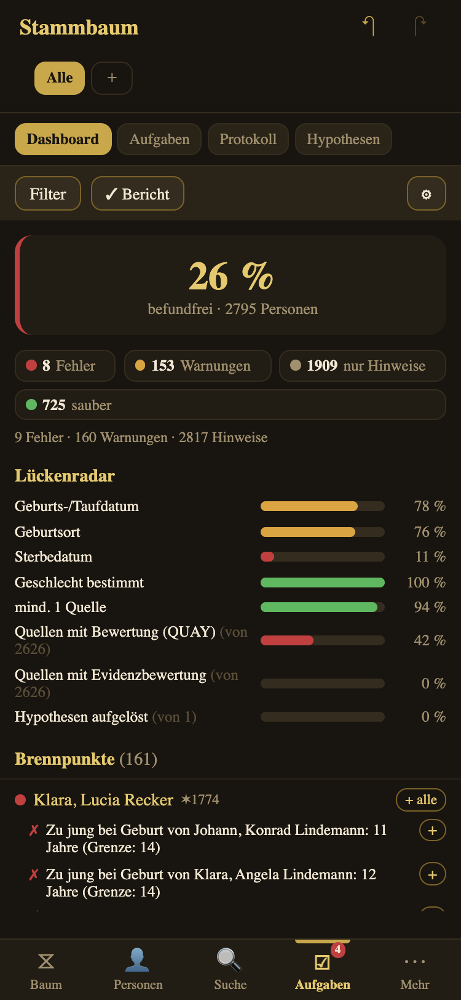
So arbeiten Sie Befunde ab
- Mit den roten Fehlern beginnen — sie deuten auf echte Widersprüche (etwa ein Kind, das nach dem Tod des Vaters geboren wurde).
- Jeden Brennpunkt antippen, die Person öffnen und den Widerspruch entweder korrigieren oder mit einer Quelle erklären.
- Über den Lückenradar gezielt Lücken schließen (fehlende Geburtsorte, unbelegte Angaben).
- Den Fortschritt am Wert „% befundfrei" und an den Zählern verfolgen.
14. Suchen und Finden
Die Suche (untere Leiste) durchsucht alle fünf Datenarten gleichzeitig — Personen, Familien, Quellen, Orte und Höfe — und zeigt die Treffer schon ab zwei Zeichen, nach Datenart gruppiert. Ein Tippen führt direkt zum Eintrag. Im Beispiel filtert „Ochtr" bereits alle in Ochtrup geborenen Personen heraus. Innerhalb einer Liste filtert zusätzlich das jeweilige lokale Suchfeld sofort mit.
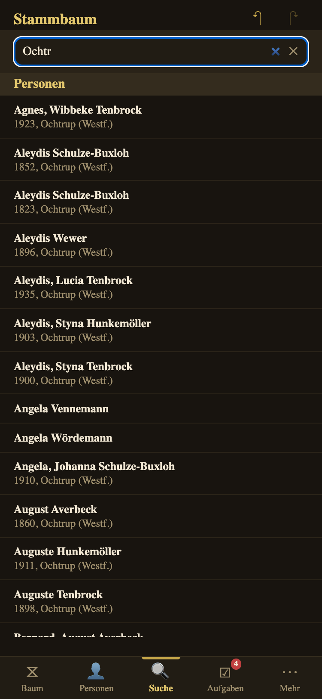
15. Speichern und Sichern
Zwei Wege zu speichern
Stammbaum nutzt ein Export-Rohr mit zwei Stufen: Wo der Browser es erlaubt, schreibt die App direkt in Ihre Datei zurück; sonst wird die Datei zum Herunterladen bzw. Teilen angeboten. In beiden Fällen entsteht dieselbe, formattreue Ausgabe.
Arbeitskopie und Auto-Load
Ihr aktueller Stand wird als Arbeitskopie im Gerät gehalten und beim nächsten Start automatisch geladen. Sie verlieren also nichts, wenn Sie den Tab schließen.
Rückgängig und „Zum geladenen Stand"
- Undo/Redo nimmt einzelne Änderungen schrittweise zurück (Snapshot-Verlauf).
- Zum geladenen Stand verwirft alle Änderungen seit dem letzten Laden/Speichern.
16. Datenformate und Import/Export
Welche Formate?
- GEDCOM 5.5.1 — öffnen und schreiben (Standardformat).
- GEDCOM „Strict" und GEDCOM 7.0 — als Export-Formate im selben Export-Rohr (die Formatwahl bestimmt Serialisierer und Dateiendung).
- GRAMPS — lesen und schreiben; Änderungen (Namen, Geschlecht, Quellen, Ereignisse …) werden zurückgeschrieben.
In anderes Format exportieren
Über Datei → In anderes Format exportieren wählen Sie das Zielformat (5.5.1 / Strict / GED7) und optional eine Anonymisierung — mit Zähler, wie viele von wie vielen Personen betroffen sind. So geben Sie einen Auszug weiter, ohne lebende Personen preiszugeben.
Datenerhalt (Roundtrip)
Das Kernversprechen: Was hineingeht, kommt unverfälscht wieder heraus. Felder, die die App nicht selbst bearbeitet, werden unverändert durchgereicht — Ihre Datei verliert beim Öffnen und Speichern nichts.
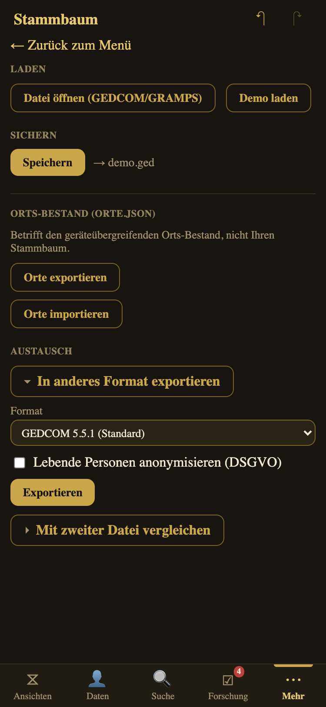
Dateien vergleichen
Datei → Mit zweiter Datei vergleichen stellt einen zweiten Bestand gegenüber: Die App klassifiziert Personen (sichere / mögliche / unsichere Entsprechung) und zeigt je Feld Ergänzungen, Konflikte und Identisches — Sie entscheiden feldweise, was übernommen wird.
17. Was noch folgt
Ehrlichkeitshalber: Die folgenden Bereiche sind geplant und in der App teils schon als „(folgt)" sichtbar, aber noch nicht nutzbar. Sie sind hier aufgeführt, damit Sie wissen, was heute fehlt.
- Story / Biografie — erzählte Lebensgeschichten mit Karte und Download.
- Ausgaben / Druck — Familienbuch, Ahnenliste, Ortsbuch, Hofchronik und weitere Druckvorlagen.
- Beziehungsrechner — Verwandtschaftsgrad zwischen zwei Personen.
- GOV-Import für historische Ortszugehörigkeiten (die Felder existieren, der importierende Weg fehlt noch).
- Assoziationen (Zeugen, Paten, Informanten) in der Oberfläche — im Datenkern bereits vorhanden.
- Einstellungen.
18. Gute Praxis auf einen Blick
- Belegen vor Behaupten. Jede Tatsache verdient eine Quelle. Eine unbelegte Angabe ist eine Hypothese, keine Tatsache.
- Orte verknüpfen, nicht tippen. Erst als Ortsobjekt entfaltet ein Ort seinen Wert (Karte, Statistik, Zeitgenossen).
- Unschärfe zulassen.
um 1750ist ehrlicher als ein erfundenes exaktes Datum. - Drei Ebenen trennen: Quelle (Beweiskraft) — Tatsache (Ereignis) — Schlussfolgerung (Hypothese).
- Auch Erfolgloses protokollieren. Wo Sie schon gesucht haben, ist wertvolles Wissen.
- Regelmäßig sichern. Die App speichert nicht von selbst in Ihre Datei — schreiben Sie bewusst zurück.
- Datenpflege ist laufend. Orte aufräumen und das Dashboard prüfen gehören zur Routine, nicht ans Projektende.
19. Häufige Fragen
- Wo sind meine Daten gespeichert? Sind sie sicher?
- Ausschließlich auf Ihrem Gerät. Es gibt keinen Server und kein Konto; nichts wird hochgeladen. Sichern Sie zusätzlich, indem Sie die Datei regelmäßig exportieren.
- Muss ich speichern?
- Ihr Zwischenstand bleibt automatisch als Arbeitskopie erhalten und wird beim Neustart geladen. In Ihre Datei schreiben Sie aber bewusst über das Datei-Menü zurück (siehe Kapitel 15).
- Ich habe aus Versehen etwas geändert — was nun?
- Nutzen Sie ↶ Rückgängig oder verwerfen Sie alle Änderungen seit dem Laden mit Zum geladenen Stand.
- Die Karte bleibt leer.
- Es fehlen Koordinaten. Importieren Sie zuerst einen Orts-Bestand (Kapitel 7); erst dann erscheinen Marker.
- Kann ich die App ohne Internet nutzen?
- Ja. Einmal geladen, funktioniert sie offline; eine Anzeige signalisiert den Offline-Zustand.
- Was ist der Unterschied zwischen einem Ort und einem Hof?
- Ein Ort ist ein Dorf/eine Gemeinde; ein Hof ist eine Adresse innerhalb eines Ortes (Straße, Hausnummer). Siehe Kapitel 8.
- Gehen beim Öffnen und Speichern Daten verloren?
- Nein. Felder, die die App nicht selbst bearbeitet, werden unverändert durchgereicht (siehe Kapitel 16).
- Wie gebe ich einen Auszug weiter, ohne Lebende preiszugeben?
- Beim Export die Anonymisierung aktivieren (Kapitel 16).
20. Umstieg von anderen Programmen
Stammbaum liest die verbreiteten Austauschformate. Der beste Weg aus einem anderen Programm ist daher der Export als GEDCOM 5.5.1 — oder, aus GRAMPS, die native GRAMPS-Datei.
- Im Ausgangsprogramm als GEDCOM 5.5.1 (oder GRAMPS-Datei) exportieren.
- In Stammbaum über Mehr → Datei → Datei öffnen einlesen.
- Die Orte ordnen (Kapitel 7) und mit dem Dashboard die Datenlage prüfen.
21. Checkliste für einen guten Start
- Datei geladen und einmal probehalber zurückgeschrieben (der Speicherweg funktioniert).
- Orts-Bestand importiert, Dubletten zusammengeführt, Text-Orte verknüpft.
- Dashboard angesehen — die größten Lücken und Fehler sind bekannt.
- Für die wichtigsten Personen sind die Kernquellen erfasst und bewertet.
- Offene Fragen als Aufgaben notiert.
- Ein Sicherungsexport liegt an einem zweiten Ort.
Anhang A: Symbole und Tastaturkürzel
Symbole in Listen und Detailansichten
| Symbol | Bedeutung |
|---|---|
| ◎ | Für dieses Ereignis liegen Koordinaten vor. |
| ↗ | Auf der Karte anzeigen. |
| Quellen-Marke | Verknüpfte Quelle — zeigt deren Kurznamen (nur bei namenloser Quelle die interne Nummer §N); der kleine Punkte-Balken daneben ist die Beweiskraft (0–3 gefüllte Punkte). |
| QUAY 3 | Beweiskraft eines Quellenbezugs (0–3), als Punkte-Balken (so viele gefüllte Punkte wie die Stufe). |
| ✎ | Bearbeiten. |
| ⧖ | Im Baum anzeigen. |
| ↶ / ↷ | Rückgängig / Wiederherstellen. |
| braune Kreise / blaue Rauten | Auf der Karte: Dörfer bzw. Höfe. |
Untere Navigation (Handy)
| Tab | Führt zu |
|---|---|
| ⧖ Ansichten | Grafische Ansichten (Baum, Karte, Zeitleiste). |
| 👤 Daten | Datenarten (Personen, Familien, Quellen, Orte, Höfe). |
| 🔍 Suche | Globale Suche über alle Datenarten. |
| ☑ Forschung | Forschung: Aufgaben, Protokoll, Hypothesen, Dashboard. |
| ⋯ Mehr | Statistik, Datei-Menü, weitere Werkzeuge. |
Tastaturkürzel (Computer)
| Kürzel | Wirkung |
|---|---|
| ⌘K / Strg+K | Befehlspalette öffnen. |
| ⌘S / Strg+S | Speichern. |
| Esc | Dialog/Panel schließen. |
Anhang B: Das GEDCOM-Dateiformat
GEDCOM ist das seit Jahrzehnten verbreitete Austauschformat für
genealogische Daten. Es ist eine reine Textdatei aus nummerierten Zeilen
(0 @I1@ INDI, 1 NAME …). Stammbaum liest und schreibt es
nativ.
Datenerhalt (Roundtrip & Passthrough)
Das zentrale Versprechen: Was hineingeht, kommt unverfälscht wieder heraus. Intern bewahrt Stammbaum den vollständigen Zeilenbaum der Datei. Felder, die die App selbst bearbeitet, werden aus dem Modell geschrieben; alle übrigen — auch fremde oder seltene Tags — werden als Passthrough unverändert durchgereicht. Ein erneutes Speichern ohne Änderung erzeugt bit-gleiche Ausgabe; es geht nichts verloren.
Export-Formate
| Format | Zweck |
|---|---|
| GEDCOM 5.5.1 | Standardformat, verlustfrei inkl. der App-eigenen Zusatz-Tags. |
| GEDCOM 5.5.1 „Strict" | Maximale Fremdkompatibilität: alle proprietären _-Tags werden weggelassen oder auf Standard-Tags abgebildet. Bewusst nicht verlustfrei, aber von jedem Programm lesbar. |
| GEDCOM 7.0 | Die moderne Fassung des Standards mit aktualisierten Strukturen. |
Abbildung im „Strict"-Export
| App-Tag | wird zu |
|---|---|
| _UID | REFN (mit 2 TYPE UID) |
| Rufname | NICK |
| Kind-Verhältnis (_FREL/_MREL) | PEDI |
| Aufgaben/Protokoll/Hypothesen/Evidenz | weggelassen |
Ausgewählte Anpassungen im GEDCOM-7.0-Export
| 5.5.1 | 7.0 |
|---|---|
| geteilte Notiz (NOTE) | SNOTE |
| externe ID (REFN) | EXID |
| bestätigtes Fehlen („Kein bekanntes Ereignis: …") | NO-Struktur |
| Rolle einer Assoziation (RELA) | ROLE |
Proprietäre Tags der App
Für Funktionen, die GEDCOM nicht kennt, verwendet Stammbaum eigene, mit Unterstrich beginnende Tags. Sie reisen im vollen 5.5.1-Export mit und werden von anderen Programmen ignoriert; im „Strict"-Export entfallen sie.
| Tag | Inhalt |
|---|---|
| _TASK | Forschungsaufgabe (Kapitel 12) |
| _RLOG | Forschungsprotokoll-Eintrag |
| _HYPO | Hypothese samt Konfidenz und Belegen |
| _EVAL | Evidenzbewertung eines Quellenbezugs |
Was die App bearbeitet — und was sie nur durchreicht
Nicht jedes Feld einer GEDCOM-Datei hat in Stammbaum eine eigene Bearbeitungsmaske. Entscheidend ist: Auch was die App nicht selbst bearbeitet, geht nicht verloren. Solche Zeilen werden als Passthrough unverändert bewahrt und beim Speichern an ihrer Stelle wieder ausgegeben.
| Kategorie | Verhalten |
|---|---|
| Von der App bearbeitet | Namen, Geschlecht, Ereignisse (Datum, Ort, Adresse), Quellen & Zitate mit Beweiskraft, Notizen, Familien-/Kind-Verknüpfungen, die Forschungsdaten (Aufgaben/Protokoll/Hypothesen/Evidenz) — werden aus dem Modell geschrieben. |
| Erhalten, aber (noch) nicht editierbar | Medien-/Objektverweise, Assoziationen (Zeugen/Paten), seltene oder programmspezifische Fremd-Tags — bit-genau durchgereicht. |
| Bewusst nicht in GEDCOM abbildbar | Die Zeitachse der Orte (historische Namen, datierte Verwaltungszugehörigkeit) und die Hof-Historie. GEDCOM kennt nur einen Ortstext je Ereignis; beim Export wird die periodengerechte Fassung geschrieben, die volle Historie bleibt in orte.json (siehe Kapitel 7). |
Grenzen der Kompatibilität
- Voller 5.5.1-Export ist verlustfrei — inklusive aller
App-Zusatz-Tags. Andere Programme ignorieren die
_-Tags stillschweigend, verlieren sie aber beim erneuten Speichern unter Umständen. - „Strict" ist bewusst nicht verlustfrei. Um maximale Fremd-Lesbarkeit zu erreichen, werden proprietäre Tags weggelassen oder auf Standard-Tags abgebildet (siehe Tabelle oben). Forschungsdaten (Aufgaben/Protokoll/Hypothesen/Evidenz) sind in dieser Variante nicht enthalten — für die Weitergabe an ein anderes Programm gedacht, nicht als Sicherung.
- Zeichenkodierung. Eingelesen werden verbreitete Kodierungen; die Ausgabe erfolgt in UTF-8. Sehr alte ANSEL-Dateien können exotische Sonderzeichen enthalten, die nicht jedes Quellprogramm sauber gesetzt hat.
- Unscharfe Daten (
um,vor,nach, Zeiträume) bleiben als solche erhalten — eine erfundene Präzisierung findet nicht statt.
Anhang C: Das GRAMPS-Dateiformat
GRAMPS ist ein freies Genealogieprogramm; seine native Datei
(.gramps) ist ein gzip-komprimiertes XML. Stammbaum
entpackt sie beim Öffnen automatisch und kann sie wieder schreiben.
Datenerhalt und Write-Back
Wie bei GEDCOM ist der struktur-erhaltende XML-Baum die Grundlage der Treue: Der Writer gibt den geparsten Baum idempotent wieder (unverändertes Speichern erzeugt identisches XML). Ihre Änderungen im Modell werden gezielt in diesen Baum zurückgeschrieben — Namen, Geschlecht, Quellen und Zitate, Notizen, Ereignisse und Daten sowie das Hinzufügen und Entfernen ganzer geteilter Datensätze.
Was übernommen wird
- Personen und Familien mit ihren Verknüpfungen,
- Ereignisse und (auch unscharfe) Daten,
- Quellen, Zitate und Archive,
- Orte samt ihrer Hierarchie (die in das Orts-Modell projiziert wird),
- Notizen und Tags (Farbmarkierungen).
Bearbeiten und zurückschreiben — Umfang und Grenzen
GRAMPS ist in Stammbaum ein vollwertiges Zweitformat, nicht nur ein Import: Ihre Änderungen wandern gezielt in den XML-Baum zurück. Zurückgeschrieben werden Namen und Geschlecht, Ereignisse mit Datum und Ort, Quellen, Zitate und deren Beweiskraft, Notizen — sowie das Hinzufügen und Entfernen ganzer geteilter Datensätze (Personen, Familien, Ereignisse, Zitate).
Ein paar Besonderheiten des Formats sind zu kennen:
- Orte nativ, nicht per Text. GRAMPS verknüpft ein Ereignis über einen
Verweis mit dem Ortsdatensatz (nicht über eine Zeichenkette). Stammbaum
übernimmt diese Verknüpfung direkt; Höfe erkennt es an
type="Building". - Adressen liegen woanders. GRAMPS kennt keine Ereignis-Adresse wie GEDCOM; Straße/Hausnummer stehen bei Wohn-/Besitz-Ereignissen im Beschreibungsfeld. Stammbaum bildet das sauber aufeinander ab — beim Wechsel zwischen den Formaten geht die Hofadresse nicht verloren.
- Idempotenz. Unverändertes Speichern erzeugt bit-gleiches XML; geänderte Objekte werden an ihrer korrekten Stelle im Baum aktualisiert, alles Übrige bleibt unangetastet.
- Grenze. Wie bei GEDCOM kann die datierte Orts-/Hof-Historie
nicht vollständig ins Wire-Format; ihre Heimat bleibt
orte.json(Kapitel 7).
Anhang D: Technischer Überblick
Dieser Abschnitt richtet sich an technisch Interessierte und erklärt, wie Stammbaum aufgebaut ist und warum. Bedienwissen brauchen Sie hier nicht — es geht um die Bauweise hinter der Oberfläche.
Architektur in Schichten
Stammbaum ist streng in Schichten geteilt, mit einer einzigen Regel: Abhängigkeiten zeigen nur nach unten. Der Kern weiß nichts von der Oberfläche.
| Schicht | Aufgabe |
|---|---|
| Kern (framework-frei) | Datenmodell und die gesamte Genealogie-Logik: Parser, Writer, Orts-/Hofauflösung, Statistik, Regel-Engine, Duplikat-Erkennung. Reine, DOM- und framework-freie Funktionen. |
| Dienste | Laden/Speichern, Undo/Redo, Export-Orchestrierung, Validierung, Konfiguration. Hier — und nur hier — leben die Plattform-Schnittstellen (Dateisystem, IndexedDB), hinter austauschbaren Adaptern. |
| Schale (Svelte 5) | Reaktive Listen, Formulare, Detailansichten, Navigation. Sie hält den Zustand und ruft den Kern auf — Logik liegt nicht in den Komponenten. |
| Inseln (imperatives SVG) | Die Diagramme (Sanduhr, Karte, Zeitleiste) rendern eigenständig in einen von der Schale gestellten leeren Container. |
Der Nutzen dieser Trennung ist praktisch: Weil der Kern ohne Browser und ohne Bau-Schritt lauffähig ist, lässt sich die gesamte Genealogie-Logik in Sekunden headless testen — jede zugesicherte Eigenschaft (jede „Invariante") hat ihren eigenen Test. Deploy nur bei grün.
Datenerhalt als Prüfstein (Roundtrip)
Das oberste Versprechen ist die Roundtrip-Treue: Öffnen und
unverändertes Speichern erzeugt eine bit-gleiche Datei, und ein zweiter
Durchlauf ändert daran nichts mehr (out1 === out2). Technisch bewahrt die
App den vollständigen Zeilen- bzw. XML-Baum der Datei; App-Felder werden aus dem Modell
geschrieben, alles Übrige unverändert durchgereicht. Nach jeder Änderung an Parser oder
Writer prüft ein automatischer Test, dass unterm Strich nichts hinzukommt oder
verlorengeht — dieser „Netto-Differenz null"-Test ist die härteste Regel des Projekts.
Orts- und Hofauflösung — der dichteste Teil des Kerns
Ein Ereignis trägt in der Datei nur einen Ortstext (und evtl. eine Adresse). Die Auflösung ist eine reine, deterministische Funktion, die daraus die Verknüpfung auf ein Orts- bzw. Hofobjekt herleitet. Sie läuft bei jedem Laden neu — die Verknüpfung selbst wird nicht in die Datei geschrieben, sondern jedes Mal frisch berechnet („Neuberechnung ist die Persistenz"). Das hält die Datei standardkonform und macht die Zuordnung reproduzierbar.
- Projektions-Invariante. Ist ein Ereignis verknüpft, ist sein Ortstext nur noch eine Projektion aus dem Objekt — periodengerecht fürs Ereignisjahr, live gelesen von Anzeige und Writer. Ein veralteter Zwischenstand ist damit strukturell ausgeschlossen: eine Änderung am Ort wirkt sofort überall.
- Konventions-Matrix. Verschiedene Programme schreiben Orte unterschiedlich (Hof im Ortstext vs. in der Adresse, volle Hierarchie vs. atomarer Name). Ein Satz von Auflösungspfaden erkennt diese Konventionen deterministisch und ordnet Dorf und Hof korrekt zu.
- Auto-Seed. Beim Import entstehen die Dörfer automatisch aus den distinkten Orts-Hierarchien; Höfe nur aus echten Adressen.
- Gleichnamigkeit. „Oldenburg (Niedersachsen)" und „Oldenburg (USA)" bleiben getrennt (Elternketten-Prüfung), während die bis zu sechzehn Verwaltungsketten, unter denen Ochtrup über die Jahrhunderte auftaucht, zu einem Ort zusammenfallen.
- Ungewissheit sichtbar. Was nicht eindeutig auflösbar ist, landet nicht in einer stillen Fehlzuordnung, sondern in einem Prüfen-Workflow mit klaren Klassen (mehrdeutiger Ort, mehrdeutiger Hof, Adresse ohne Hof …).
Die Datei orte.json und der Abgleich
Der Orts-/Hofbestand liegt in einer eigenen Datei orte.json (plus einem
Spiegel in der Browser-Datenbank). Sie trägt einen kleinen Kopf (Revision, Gerät,
Zeitstempel, Schema-Version). Beim Abgleich über mehrere Geräte werden die Bestände
vereinigt, nicht überschrieben (ein Objekt gewinnt als Ganzes) — und
eine neuere Schema-Version als die bekannte löst einen Schreibstopp aus, damit eine
ältere App-Version keine neuen Felder zerstört. So bleibt das mühsam gepflegte
Ortswissen über alle Ihre Stammbäume und Geräte hinweg erhalten (siehe
Kapitel 7).
Speicher, Rückgängig, Offline
- Arbeitskopie. Der aktuelle Stand liegt als Arbeitskopie in der IndexedDB und wird beim Start automatisch geladen — ein geschlossener Tab verliert nichts. In Ihre Datei schreiben Sie bewusst zurück.
- Rückgängig/Wiederherstellen. Jede Änderung erzeugt einen Schnappschuss; der Verlauf lässt sich schrittweise zurücknehmen, „Zum geladenen Stand" verwirft alles seit dem letzten Laden.
- Geräte-lokale Einstellungen. Regel-Konfiguration der Datenprüfung, Forschungsprojekte und die „kein Duplikat"-Merkliste liegen ebenfalls im Gerät und reisen nicht mit der Genealogie-Datei — Ihre GEDCOM-/GRAMPS-Datei bleibt davon unberührt.
- PWA / Offline. Ein Service Worker macht die App nach dem ersten Laden offline lauffähig; ein Manifest erlaubt die Installation zum Startbildschirm. Es gibt keinen Server und kein Konto.
Anonymisierung beim Export
Der anonymisierte Export schützt Lebende in drei Stufen: (1) datumsbasiert gilt als lebend, wer kein Sterbedatum hat und weniger als 100 Jahre vor dem Bezugsjahr geboren ist; (2) diese Einstufung breitet sich vorsichtig nur über undatierte Verwandte aus; (3) Personen ganz ohne Datum gelten sicherheitshalber als lebend. Anonyme Personen behalten nur „Lebende Person", Geschlecht und Familienverknüpfungen; Familien mit einem lebenden Partner verlieren ihre Ereignisdetails. Dieselbe Mechanik erzeugt die anonymisierte Beispieldatei, aus der die Abbildungen dieses Handbuchs stammen.